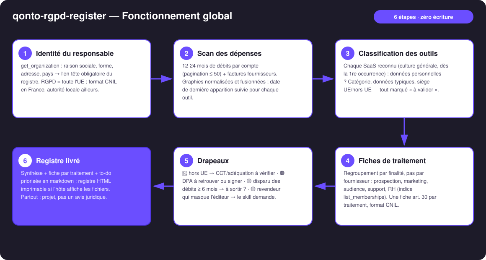
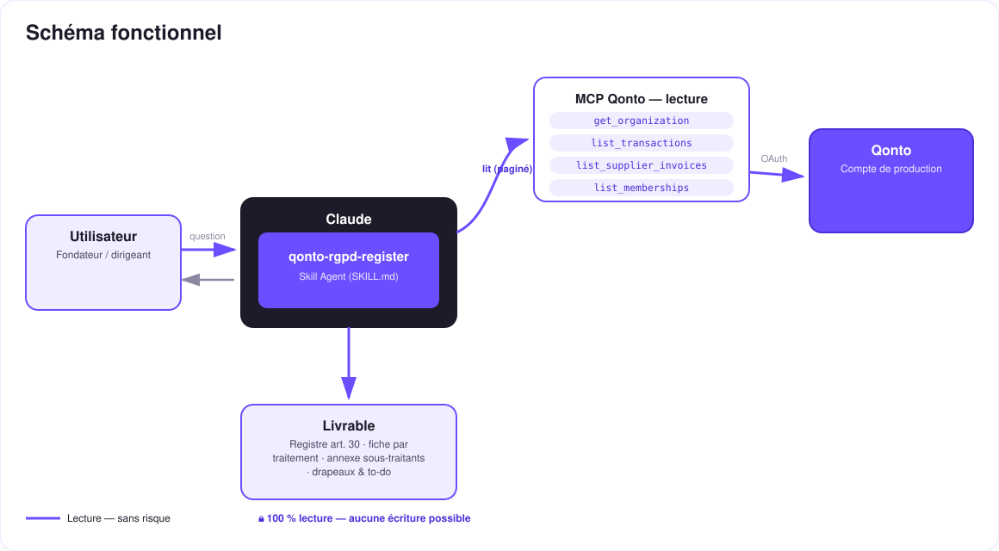

Ton compte bancaire connaît tes sous-traitants mieux que toi — le registre art. 30 RGPD généré depuis tes dépenses.
Le registre des activités de traitement (art. 30 RGPD), c'est le document que 90 % des TPE n'ont pas — et le premier que la CNIL demande. Or la liste des sous-traitants qui traitent tes données personnelles est déjà écrite quelque part : dans tes débits. Le skill la lit :
Les SaaS qui traitent des données personnelles (CRM, emailing, analytics, IA, cloud, paie, support) — reconnus dès la première occurrence, culture générale de Claude.
Finalité, données typiques, personnes concernées, siège et hébergement UE / hors-UE — chaque attribut marqué « à valider ».
Une fiche par traitement au format CNIL, en-tête responsable rempli depuis get_organization, placeholders visibles pour les décisions humaines.
🔴 transfert hors UE → CCT à vérifier · 🟠 DPA à retrouver ou signer · 🟡 outil disparu des débits depuis 6 mois → à sortir du registre ?
| Prérequis | Détail | Obligatoire |
|---|---|---|
| Compte Qonto production | Le skill s'adapte à toute organisation — get_organization d'abord, zéro donnée en dur | ✅ |
| Pays | RGPD = toute l'UE — skill pan-européen. France : format et références CNIL ; autres pays Qonto : même registre, autorité locale (BfDI/LfDI, AEPD, Garante, DSB, AP, APD/GBA, CNPD) | ℹ️ détecté |
| MCP Qonto connecté | Connecteur officiel (claude.ai / Claude Desktop), login OAuth | ✅ |
| Historique de dépenses | 12-24 mois idéalement ; compte mince → squelette de registre + parties manquantes nommées | ⭕ |
| DPO ou juriste pour valider | Le skill produit un projet : qualification, bases légales et durées restent des décisions humaines | ✅ à la fin |

GOOGLE *WORKSPACE, GOOGLE IRELAND LTD, Google Cloud EMEA = un seul fournisseur ; croisement avec list_supplier_invoices (raisons sociales plus propres que les libellés carte)emitted_at (pas settled_at) pour la date de dernière utilisation
Zéro écriture, par conception : quatre outils de lecture, aucun outil d'écriture. Rien ne bouge sur le compte, aucun fournisseur n'est contacté. Et le document produit est un projet de registre, pas un avis juridique — qualification, bases légales et durées de conservation sont validées par un DPO ou un juriste. Le skill le rappelle sur chaque sortie.
Exemples illustratifs (culture générale de Claude), pas issus d'un compte réel.
| Catégorie | Exemples d'outils reconnus | Données typiquement traitées | Point d'attention fréquent |
|---|---|---|---|
| CRM & prospection | HubSpot, Pipedrive, Salesforce | Identité, coordonnées, historique commercial | Siège US → mécanisme de transfert à vérifier |
| Emailing & marketing | Mailchimp, Brevo, Mailjet | Emails, comportement d'ouverture, segments | Consentement & base légale à documenter |
| Analytics | Google Analytics, Matomo, Plausible | Identifiants en ligne, navigation | Hors-UE vs auto-hébergé : régimes très différents |
| IA | OpenAI, Anthropic, Mistral | Contenu des prompts (parfois des données clients !) | Vérifier l'option « pas d'entraînement sur vos données » |
| Cloud & hébergement | AWS, Google Cloud, OVHcloud, Scaleway | Toutes les données hébergées | Région d'hébergement UE disponible ? activée ? |
| Paie & RH | PayFit, Silae, Lucca | Données salariés (sensibles : NIR, salaires) | Fiche RH obligatoire, durées légales spécifiques |
| Support client | Zendesk, Intercom, Crisp | Identité, échanges, métadonnées | Conversations = données personnelles, souvent oublié |
| E-commerce & paiement | Shopify, Stripe | Clients finaux, transactions | Rôle contrôleur/sous-traitant ambigu → à valider |
| Drapeau | Déclencheur | Action proposée |
|---|---|---|
| 🔴 Transfert hors UE | Siège ou hébergement hors UE détecté | Vérifier adéquation / clauses contractuelles types / annexes du DPA |
| 🟠 DPA à vérifier | Sous-traitant sans DPA connu signé | Retrouver la page DPA de l'éditeur, signer ou archiver |
| 🟡 Outil fantôme | Plus aucun débit depuis ≥ 6 mois | Confirmer l'abandon → sortir du registre + demande de suppression des données |
| 🟡 Éditeur masqué | Revendeur, marketplace ou app store dans le libellé | Le skill demande quel produit se cache derrière — jamais de devinette |
| Sortie | Format | Quand |
|---|---|---|
| Réponse dans la conversation | Tableaux markdown : synthèse sous-traitants, fiche par traitement, to-do priorisée | Toujours — c'est la base |
| Registre imprimable | Fichier/artifact HTML : en-tête responsable, fiches art. 30, annexe sous-traitants, to-do | Si l'hôte affiche les fichiers (artifacts claude.ai, Claude Desktop, Claude Code) ; repli automatique sur les tableaux sinon |
| Bandeau disclaimer | « Projet de registre, pas un avis juridique — à valider (DPO/juriste) » | Sur chaque sortie, sans exception |
La démo ≤ 3 min jointe à la PR suit le storyboard : problème (le document que personne n'a) → scan des débits → classification & fiches → le registre art. 30 complet généré depuis un relevé bancaire → to-do DPA/transferts. Tournée en live sur un compte de production réel. Le script détaillé de tournage est conservé en interne (hors dépôt).
| Idée | Effort | Note |
|---|---|---|
| Multi-MCP optionnel : scan Gmail/Drive pour retrouver les DPA déjà signés | Moyen | Détection dynamique — s'active si le MCP est présent, sinon le skill le dit et continue |
| Diff de registre : relancer 6 mois plus tard → entrants / sortants | Faible | Réutilise la date de dernière apparition |
| Modèles de courrier « demande de DPA » et « demande de suppression » | Faible | Toujours zéro écriture — texte à copier |
| Annexe AIPD : traitements susceptibles d'exiger une analyse d'impact | Moyen | Toujours « à valider », jamais de qualification définitive |